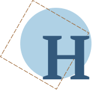

а другой день я вот что придумал. Человечки, наверно же, едят что-нибудь. Если дать им конфету, так это для них целый воз. Надо отломить от леденца кусок и положить на пароходик, около будочки. Около самых дверей. Но такой кусок, чтоб сразу в ихние дверцы не пролез. Вот они ночью двери откроют, выглянут в щёлочку. Ух ты! Конфетища! Для них это – как ящик целый. Сейчас выскочат, скорей конфетину к себе тащить. Они её в двери, а она не лезет! Сейчас сбегают, принесут топорики – маленькие-маленькие, но совсем всамделишные – и начнут этими топориками тюкать: тюк-тюк! тюк-тюк! И скорей пропирать конфетину в дверь. Они хитрые, им лишь бы всё вёртко. Чтоб не поймали. Вот они завозятся с конфетиной. Тут, если я и скрипну, всё равно им не поспеть: конфетина в дверях застрянет – ни туда, ни сюда. Пусть убегут, а всё равно видно будет, как они конфетину тащили. А может быть, кто-нибудь с перепугу топорик упустит. Где уж им будет подбирать! И я найду на пароходике на палубе малюсенький настоящий топорик, остренький-преостренький.И вот я тайком от бабушки отрубил от леденца кусок, как раз какой хотел. Выждал минуту, пока бабушка в кухне возилась, раз-два – на стол ногами и положил леденец у самой дверки на пароходике. Ихних полшага от двери до леденца. Слез со стола, рукавом затёр, что ногами наследил. Бабушка ничего не заметила.
Днём я тайком взглядывал на пароходик. Повела бабушка меня гулять. Я боялся, что за это время человечки утянут леденец и я их не поймаю. Я дорогой нюнил нарочно, что мне холодно, и вернулись мы скоро. Я глянул первым делом на пароходик! Леденец как был – на месте. Ну да! Дураки они днём браться за такое дело!
Ночью, когда бабушка заснула, я устроился в домике из одеяла и стал глядеть. На этот раз ночник горел замечательно, и леденец блестел, как льдинка на солнце, острым огоньком. Я глядел, глядел на этот огонёк и заснул, как назло! Человечки меня перехитрили. Я утром глянул – леденца не было, а встал я раньше всех, в одной рубашке бегал глядеть. Потом со стула глядел – топорика, конечно, не было. Да чего же им было бросать: работали не спеша, без помехи и даже крошечки ни одной нигде не валялось – всё подобрали.
Другой раз я положил хлеб. Я ночью даже слышал какую-то возню. Проклятый ночник еле коптил, я ничего не мог рассмотреть. Но наутро хлеба не было.
Чуть только крошек осталось. Ну понятно, им хлеба-то не особенно жалко, не конфеты: там каждая крошка для них леденец.
Я решил, что у них в пароходике с обеих сторон идут лавки. Во всю длину. И они днём там сидят рядком и тихонько шепчутся. Про свои дела. А ночью, когда все-все заснут, тут у них работа.